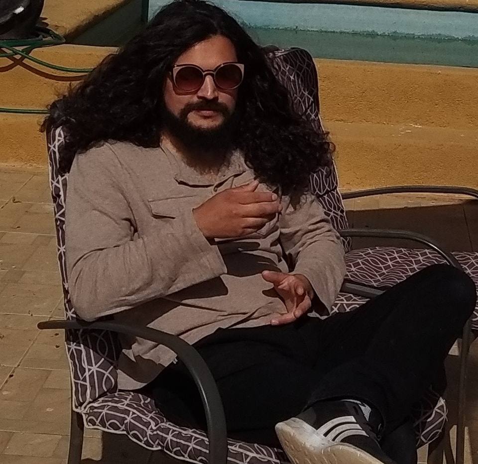

Curriculum Vitae

Gabriel Muñoz
Resumen
Nacido en Puente Alto el 13 de Enero de 1991, desde muy pequeño mostro interes por las tecnologias y la musica. Nunca imagino terminar siendo un experto en cannabis
Datos Personaless
- Nombre: Gabriel Alejandro Muñoz Solis
- Lugar de Naciemiento: Santiago de Chile
- Fecha de nacimiento: 13 de Enero 1991
Formacion
En 2014 ingresa como ayudante a la tienda de cultivo LaJuana donde consigue el titulo de Grand Master Grower
Datos a destacar en la carrera
- Participacion en charlas para GreenHouse sobre distintos tipos de cultivos
- Cursos de extraccion de cannabinoides para Fundacion Daya
- Charlas sobre consumo y prevencion de drogas
- Manipulacion genetica de especies cannabis sativa
Pagina personal: Instagram
Fuente:Ir a PortafolioInterno